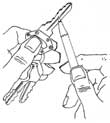
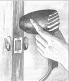
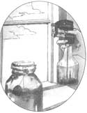
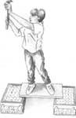
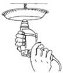

COUNTRY SKILLS
Al Carrell
20 of the all-time best hints for making household repairs.
Editor's Note: There are no more excuses. You've been putting off that minor repair project around the house for months now, even though it's making the whole family crazy. Either you're not sure how to fix it, you fear you'll have to call in a money-sucking professional, or you've simply been too involved with the outdoor thrills of summer and fall to be bothered.
But now it's winter and you're trapped indoors, so you may as well repair the door that keeps slamming or adjust the window shade that won't snap back up. To help you along, we have compiled over a dozen quick solutions to the most common - and most irritating - household problems, based on the extensive home-repair experience of "Super Handyman" Al Carrell.
An Easy Way to Sand
If a door is dragging on the floor or threshold - making scraping sounds - place sandpaper on top of a stack of magazines and position the pile under the door. (Use enough magazines so that the door hits the sandpaper.) Then work the door back and forth over the abrasive.
Dripless Lube Job
Use petroleum jelly instead of oil on door hinges. That way you don't have to worry about oil dripping on the carpet.
Lube Locks the "Write" Way
First, transfer graphite from a soft lead pencil to a key by rubbing the pencil over the key as if you were coloring it. Then put the key in the lock and move it in and out several times. Also turn the key back and forth. Your lock will love it.
Stubborn Hinge Pin
To remove a hinge pin from a door, insert a nail into the hole at the bottom of the barrel and then drive the pin upward.
No More Slam
To cut down on slamming noise, put tabs of leftover peel-and-stick foam weather stripping at several spots all around the doorstop. You can also place a wide rubber band around the doorknobs on both sides of the door. The part that stretches around the edge will cushion the slamming noise. (Be sure the rubber band doesn't touch the striker.)
Here's a tip for fresh-air fiends who enjoy leaving their door open in all seasons: Stop the wind from blowing your door open and shut by installing a screen door hook-and-eye to hold it open.
To cut down on noise in general, think weather stripping. Noise can't travel from one room to another if you weather-strip the door just as you would do for an exterior door.
Reduce Swelling
You don't need a plane to fix a door that won't open or close due to swelling. Instead, blow hot air from a hand-held hair dryer directly on the places that are causing the doors to stick. Once you have removed the moisture from those spots, the swelling will go down.
When you're done, place a wood sealer on the area to prevent any future humidity from getting into the wood.
This Is a Hole Up
Repair a hole or gouge in a slab door with auto-body filler. After it sets, hide the repair by sanding it smooth and then painting over it. If you are filling a hole in an interior door, substitute water putty for the auto-body filler.
Make Your Own Cleaner
1) Here's a homemade formula for window cleaner that cleans away stubborn spots. Mix two cups of kerosene into a gallon of warm water. When you wipe the glass, the kerosene leaves an invisible film that forces water to bead and run off.
Or
2) Add 1/2 cup of ammonia, one cup of white vinegar, and two tablespoons of cornstarch to one gallon of warm water.
Or
3) Add three tablespoons of denatured alcohol for every one quart of warm water.
A Tea Party for Windows
Leftover tea makes a super window and mirror clean er - the stronger the tea the better.
Be Shady
Don't clean windows in full sunshine; the sun will dry the cleaner before you have a chance to shine the glass.
Tension Headache
Window shades that act up can be fixed by adjusting the tension in the roll. A shade that has problems snapping back up needs more tension.
Pull the shade down, take it out of the brackets, and hand roll it back up two or three revolutions. If it still hasn't got what it takes, roll it a few more times.
Cleaning With Art
To remove spots and stains from a shade, rub an art gum eraser over them.
Silence!
A squeaky floor is usually caused by two or more boards rubbing against each other. Silence the noise by sprinkling talcum powder over the boards and sweeping it into the cracks. Another option is to pour liquid wax (which acts as a lubricant) between the cracks. Or rub a bar of soap back and forth over the cracks.
If you can get under the floor (in a basement or crawl space), place wedges between the subfloor and the joists.
Tame a Floor
To tame a large piece of new flooring that refuses to uncurl, lay an electric blanket over the flooring and turn the blanket on to a low heat.
Hiding the Damage
For a gouge in vinyl flooring, you can make a matching patching compound. Shred a scrap of the vinyl with a food grater. Then mix the resulting chips with clear adhesive or shellac to form a paste, and work the mixture into the crack. Another option is to find a crayon that matches the color of the flooring and melt it over the hole.
Straighten Up
For a warped floorboard, strip the finish and place a damp cloth over it for 48 hours. Then screw in countersunk wood screws to secure the unwarped board.
In the Buff
If you hang your floor buffer, the brushes won't flatten out. (It may sound obvious, but few people do it.)
A Miniscaffold
For ceiling work, most of us need a little extra height. Make a dandy scaffold from a pair of inverted plastic milk cases with a 2 x 12 laying across them to form a walkway.
Here's Dust in Your Eye
When drilling into the ceiling, poke a hole through the center of a throwaway aluminum pie pan. Hold the pan over the area to be drilled, and poke the bit through. This way the pan will catch most of the dust. If you don't have a pie pan, use a plastic butter tub.
Cutting Into the Ceiling
If you have to cut into your ceiling, your best bet is obviously to do so from the attic, so that you're working with the ceiling below you. You won't catch dust in your face or accidentally cut hidden wires. If you must make the cut from below, insert a corkscrew into the center of the part you plan to remove. The corkscrew makes the perfect handle for the cutout.
- Reprinted from Best Home Hints from the Super Handyman Al Carrell , published by Taylor Publishing Company; 1990. Available postpaid for $14.95. To order, call 800/759-8120
|
 To lube lock: color the fitting key with lead from a pencil. Then stick key in lock and move back and forth. |
 |
 |
|
 |
 |
|